Demand Forecast for Battery Energy Storage Systems in India
The Battery Energy Storage Systems (BESS) market in India stands at a critical inflection point, with government targets and market dynamics converging to create unprecedented growth opportunities. As India progresses toward its ambitious renewable energy goals, the demand for BESS has transformed from a secondary consideration into a core component of the nation's energy infrastructure strategy.
Government Targets and Capacity Requirements
The Central Electricity Authority (CEA) has established the most definitive capacity targets for energy storage deployment in India. According to the National Electricity Plan 2023, India requires progressively increasing storage capacity to integrate its renewable energy sources effectively:
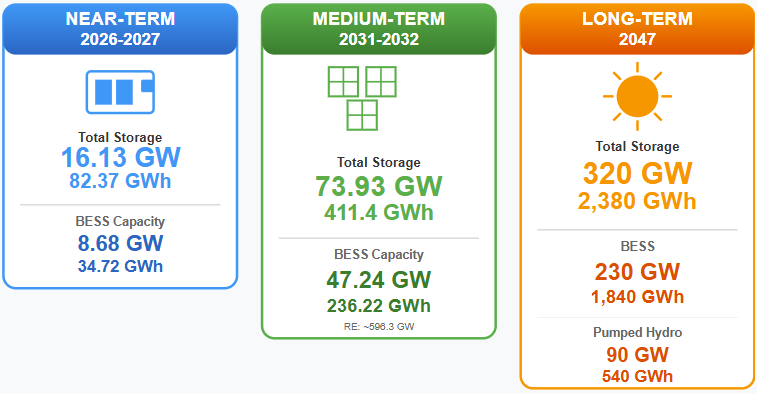
- Near-term Targets (2026-2027): India needs approximately 16.13 GW / 82.37 GWh of total energy storage capacity, of which 8.68 GW / 34.72 GWh is specifically BESS. This represents the baseline requirement for managing renewable energy intermittency as India scales its solar and wind installations.
- Medium-term Targets (2031-2032): The capacity requirement escalates dramatically to 73.93 GW / 411.4 GWh of total energy storage, with 47.24 GW / 236.22 GWh being BESS. This substantial increase reflects the anticipated growth of renewable installations to approximately 596.3 GW by this period.
- Long-term Vision (2047): Projections extend further, indicating India could require 320 GW / 2,380 GWh of total storage capacity, comprising 230 GW / 1,840 GWh from BESS and 90 GW / 540 GWh from pumped hydro storage.
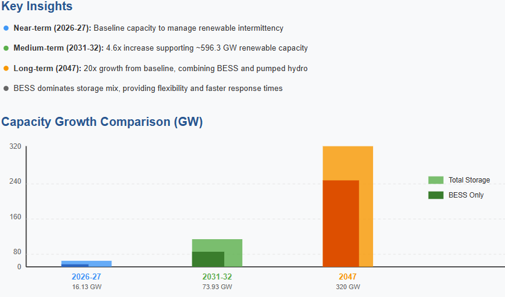
Different research organizations provide varying market forecasts, though all point toward significant growth. Some projections suggest India will need as little as 61 GW by 2030 for core grid stability, while more aggressive assessments estimate requirements approaching 74 GW by 2032 to fully integrate the renewable energy capacity.
Market Size and Growth Trajectory
The financial scale of the BESS market reflects its strategic importance. India's BESS market was valued at approximately USD 260.5 million to USD 3.5 billion in 2023-2024, depending on the scope and definition employed by different research organizations. By 2030, market projections range widely:
- IMARC Group projects the market reaching USD 2,322.1 million by 2033, with a compound annual growth rate (CAGR) of 25.80% during 2025-2033.

- Grand View Research forecasts the market will reach USD 5,318.2 million by 2030, with an aggressive CAGR of 40.9% from 2024-2030.
- Alternative estimates suggest valuations between USD 9 billion to USD 32 billion by 2030-2033, reflecting the market's potential range.
This growth translates to capital investments exceeding ₹3.5 lakh crore (approximately USD 42 billion) between 2022 and 2032 for BESS deployment alone.
Current Deployment Status and Pipeline
As of October 2025, India's operational BESS capacity stands at only 0.5 GWh, highlighting the market's nascent stage despite significant policy momentum. However, the tender pipeline reveals substantial growth anticipated in the coming years.
Current Tender Status (as of October 2025):
- Total ESS capacity tendered: 195 GWh (comprising both BESS and pumped storage hydro)
- BESS capacity specifically: 80 GWh
- Projects under execution: 17 GWh of BESS
- Projects in tendering process: 25.41 GWh of BESS
- Cancelled tenders: 8.22 GWh of BESS
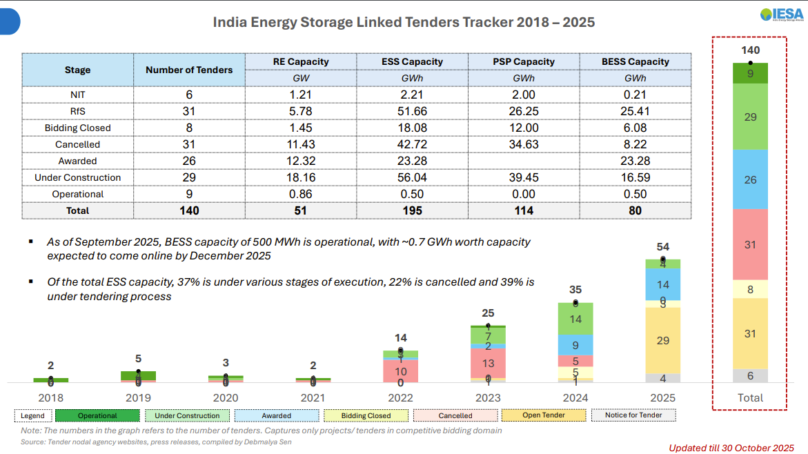
The significant shift from earlier years is evident: zero cancellations occurred in 2025 compared to substantial cancellations in prior years, indicating improved policy certainty and market viability.
Key Growth Drivers
Renewable Energy Integration remains the primary driver of BESS demand. With India targeting 500 GW of non-fossil fuel capacity by 2030 and potentially 600 GW to meet accelerating electricity demand, storage solutions are essential for managing the intermittency of solar and wind power.
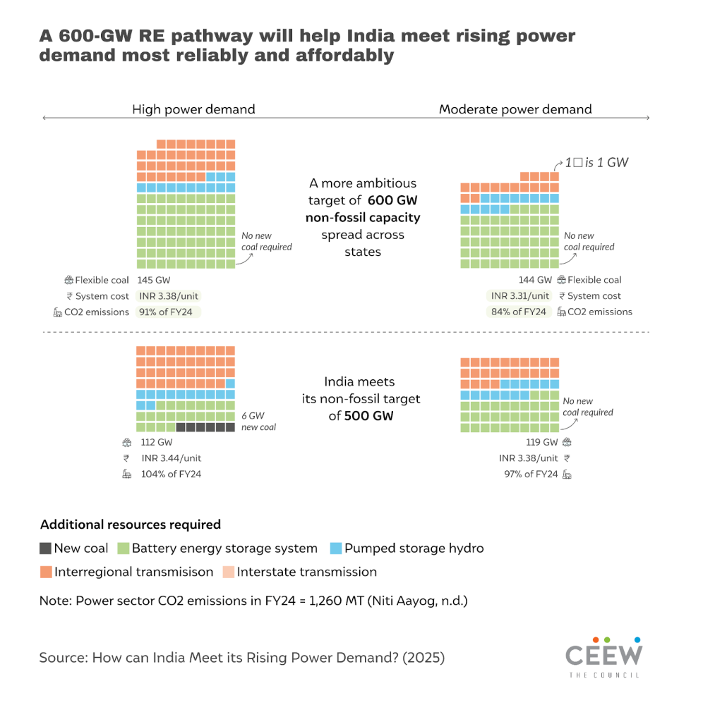
- Declining Battery Costs substantially improve BESS economics. Global lithium-ion battery pack prices are expected to decline from approximately USD 95/kWh in FY 2025 to USD 68/kWh in FY 2030. Domestically, tariff discovery for standalone BESS has dropped 75% over two years, falling from rates exceeding 10 lac/MW/month to as low as 1.77 lac/MW/month by October 2025.
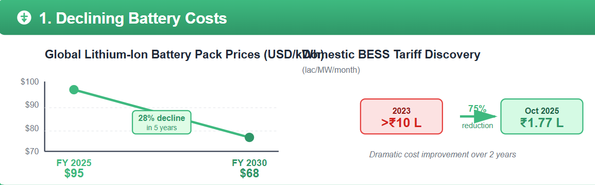
- Government Support Mechanisms accelerate deployment through the Viability Gap Funding (VGF) scheme. The first phase of VGF (providing 30% subsidy) already supports 13.2 GWh across 17 tenders, while VGF 2 (providing 16% support) targets an additional 30 GWh. The government aims to develop 4,000 MWh of BESS projects by 2030-31 through these schemes alone.
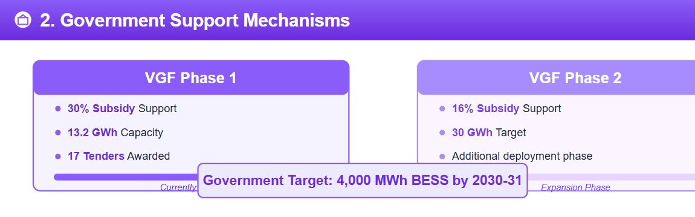
- Electric Vehicle Ecosystem Growth creates additional BESS demand beyond grid-scale applications. The expansion of EV charging infrastructure requires battery storage to manage peak loads, creating complementary market opportunities.
- Hybrid Renewable Projects increasingly incorporate mandatory BESS components. Government mandates requiring 5% of renewable projects to include storage with at least two-hour capacity are driving hybrid solar-wind-BESS integration at scale.
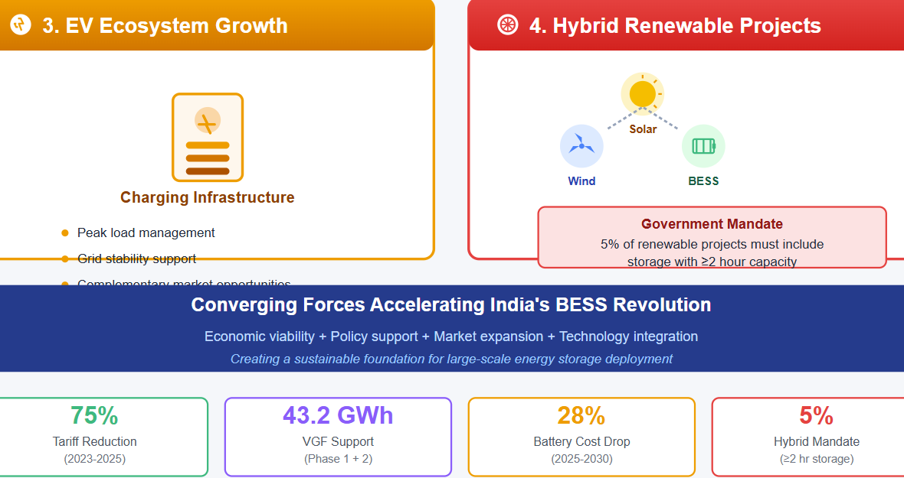
Technology and Market Segmentation
Utility-Scale Applications dominate the market, with large-scale renewable projects incorporating BESS for grid stability. As of 2023, utility-scale storage represented the largest revenue-generating segment, a position expected to strengthen as grid-integration requirements intensify.
Tender Categories and Applications:
- Standalone BESS: 34.6 GWh tendered (2025)
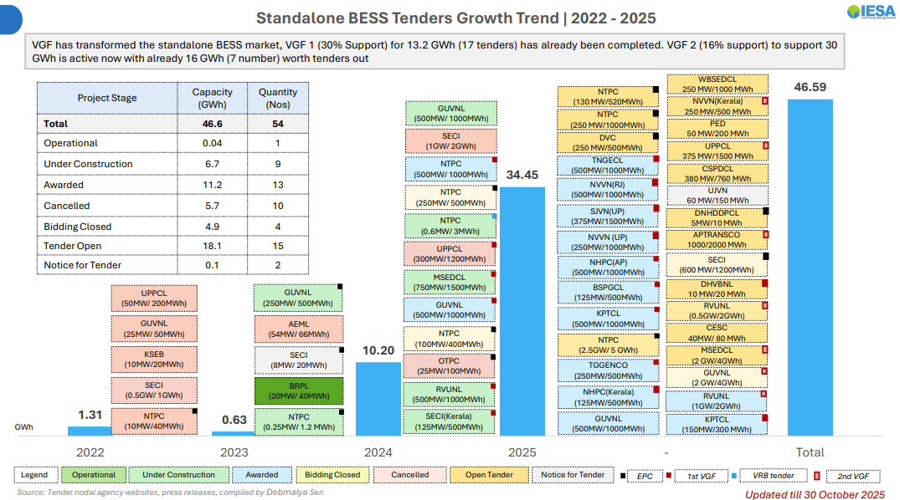
- Firm Dispatchable Renewable Energy (FDRE) with storage: 23 GWh tendered
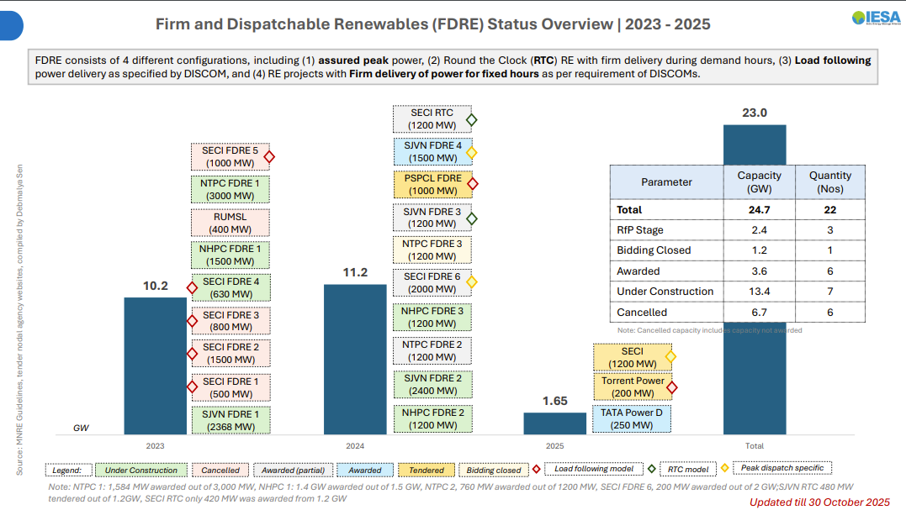
- Solar+BESS hybrid projects: 15.2 GWh tendered
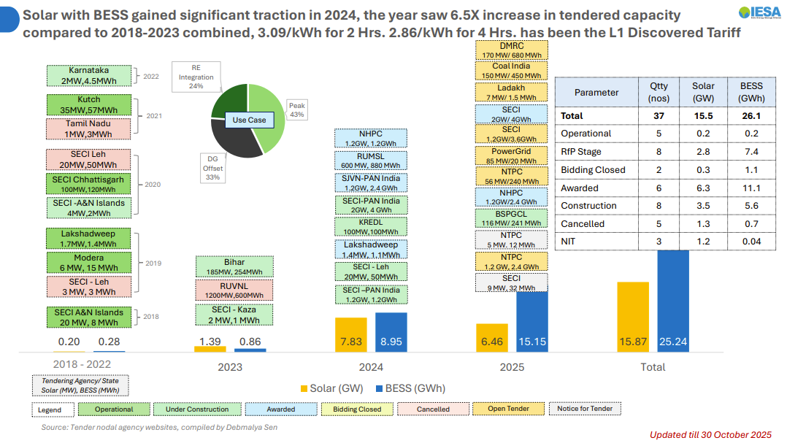
Within FDRE projects, multiple dispatch models are emerging: round-the-clock (RTC) delivery, peak assurance, load-following capability, and peak-specific dispatch, each addressing distinct grid stability requirements.
Commercial and Industrial Segments are emerging as secondary growth areas, driven by the need for demand-side management and energy arbitrage opportunities. Energy arbitrage potential is estimated at ₹2.5-₹3 per kWh by 2025, creating revenue streams beyond capacity payments.
Geographic Distribution and State-Level Growth
Leading states in BESS deployment include Gujarat, Rajasthan, Uttar Pradesh, and Maharashtra, which together account for the majority of awarded and operational capacity. State-level tenders reveal a geographic shift toward more distributed deployment as states increasingly recognize BESS's role in local grid stability.
As of October 2025, active tenders are distributed across virtually all major states, with significant pipeline capacity in West Bengal (1,000 MWh), Tamil Nadu (1,500 MWh), Haryana, Andhra Pradesh, and Bihar, indicating a move beyond traditional renewable energy hubs.
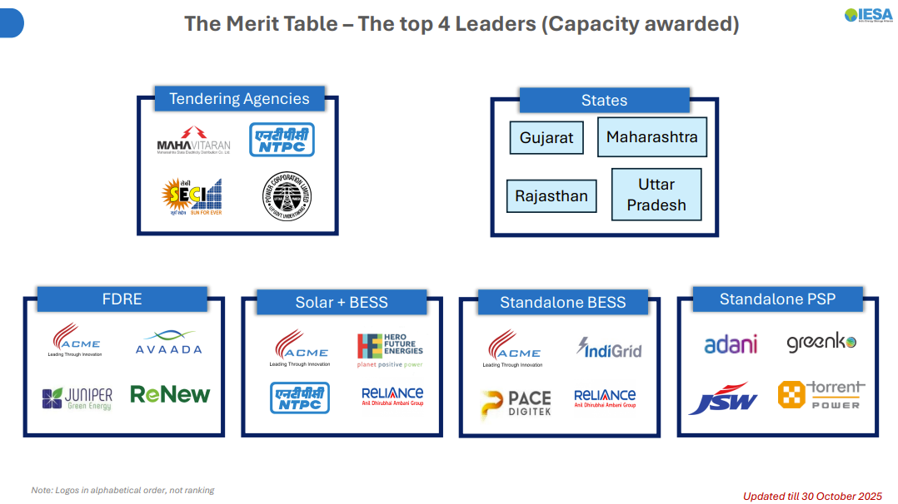
Challenges to Achieving Demand Forecasts
Despite optimistic projections, several obstacles could slow BESS deployment:
- High Capital Requirements remain the primary barrier, though declining battery costs are progressively reducing project economics. Installation timelines extending 15-18 months create financing challenges for project developers.
- Supply Chain Dependencies on lithium and other critical materials create vulnerability. While India's domestic lithium-ion battery manufacturing capacity was 18 GWh in 2023, expansion to 145 GWh by 2030 remains ambitious and dependent on successful procurement and processing infrastructure development.
- Recycling and Disposal Infrastructure remains nascent, with limited capacity to handle end-of-life battery systems. Developing circular economy frameworks is essential for long-term sustainability.
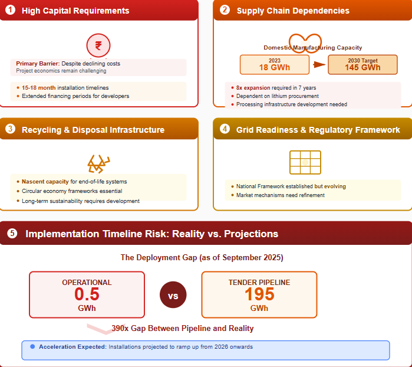
- Grid Readiness and Regulatory Framework for energy storage integration continues evolving. While the National Framework for Promoting Energy Storage Systems was established, implementation of market mechanisms for storage participation and ancillary services pricing requires further refinement.
- Implementation Timeline Risk: Current ground installations lag projections. As of September 2025, only 0.5 GWh is operational despite 195 GWh in the tender pipeline. However, analyst estimates suggest installations will accelerate from 2026 onwards, potentially reaching ~50 GWh by 2030 if projects currently in execution complete on schedule.
Market Outlook and Investment Implications
India's BESS market exhibits characteristics of rapid transition from demonstration phase to large-scale deployment. The convergence of declining costs, government support, and binding renewable energy targets creates strong structural demand growth. Between 2025 and 2030, India is positioned to deploy approximately 50 GWh of BESS, approaching or potentially exceeding near-term CEA targets if execution challenges are overcome.
The critical inflection point occurs during 2026-2027, when multiple large, tendered projects are scheduled for commissioning and when tariff discovery trends stabilize. Successfully executing the current pipeline of 17 GWh under construction while progressing 25 GWh in active tenders will determine whether India achieves its goal of 236-411 GWh BESS capacity by 2032.
For stakeholders in India's energy sector, the BESS demand forecast represents not just a storage opportunity but a fundamental requirement for achieving renewable energy ambitions and maintaining grid reliability as India's electricity system undergoes its most significant transformation in decades.